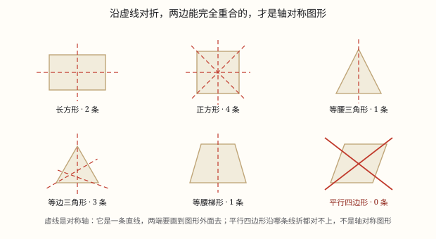
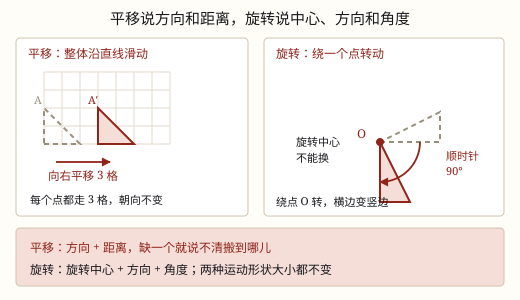

轴对称、平移和旋转
沿一条直线对折后两边能完全重合的图形叫轴对称图形，那条直线叫对称轴。
| 所属主题 | 图形的变换与运动 |
|---|---|
| 所属模块 | 图形与几何 |
| 课标学段 | 第二学段（3~4年级） |
| 前置知识 | 三角形的认识、内角和与三边关系、线段、射线、直线与角的认识 |
| 核心素养 | 几何直观空间观念推理意识 |
教材定位
人民教育出版社《2024年版》
横跨三下第 1 单元「生活中的运动现象」与五上第 4 单元「图形的运动」：轴对称图形与对称轴。；横跨三下第 1 单元「生活中的运动现象」与五上第 4 单元「图形的运动」：平移与旋转。
课标要求
| 图形与几何·图形的位置与运动 | 结合实例，感受平移、旋转、轴对称现象（例27）。 印刷第 30 页 行为动词：经历 |
|---|---|
| 图形与几何·图形的位置与运动 | 能在方格纸上进行简单图形的平移和旋转；认识轴对称图形和对称轴，能在方格纸上补全简单的轴对称图形。 印刷第 33 页 行为动词：掌握 |
| 图形与几何·图形的位置与运动 | 能从平移、旋转和轴对称的角度欣赏生活中的图案，能借助方格纸设计简单图案，感受数学美，形成空间观念。 印刷第 33 页 行为动词：体验 |
说明
把一个图形沿着一条直线对折，如果折痕两边的部分能完全重合，这个图形就叫轴对称图形，那条直线叫对称轴。
判断时抓住两件事：找到那条直线，对折后两边一模一样。模棱两可地「看着像对称」不算，必须真能对折重合。
常见轴对称图形与对称轴条数：
正方形 4 条；长方形 2 条；等边三角形 3 条；等腰三角形 1 条；等腰梯形 1 条；菱形 2 条；圆 无数条；一般的平行四边形 0 条。
（平移和旋转）
平移是物体沿着一条直线整体滑动，自己不转。电梯上下、地铁直行、推拉窗左右滑，都是平移。描述一次平移必须说清两件事：往哪个方向（上、下、左、右）、移动了几格（距离）。只说「向右平移」或只说「平移 5 格」，别人都没法把图形放回原位。
旋转是物体绕着一个点转动。描述一次旋转必须说清三件事：绕哪个点转（旋转中心）、朝哪个方向转（顺时针还是逆时针）、转了多少度。钟表指针、风扇叶片、旋转门、拧瓶盖，都是旋转。
这两种运动有一个共同点：只改变图形的位置，不改变形状和大小。平移前后，每条线段一样长、每个角一样大、朝向也不变；旋转前后，线段和角同样不变，但朝向变了——原来横着的边，转 90° 以后就竖起来了。
在方格纸上数格子有个窍门：不用整个图形去数，只盯住一个对应点。图形上每个点移动的格数都一样，A 点向右移 3 格，B 点、C 点也都向右移 3 格。所以量一个点，就等于量了整个图形。
旋转 90° 时还有一个好用的观察：图形上每条线段都跟着转 90°，横的变竖、竖的变横；对应点到旋转中心的距离始终不变。所以先定住旋转中心，再看每条边转过多少度，图形就不会画歪。
使用场景
剪纸窗花：把纸对折一次剪出半个图案，展开就是完整的对称图案。
建筑与标志：天安门、蝴蝶翅膀、很多品牌标志都是轴对称的，看着稳当。
照镜子：镜面就是一条对称轴，镜中像与实物关于镜面对称。
折纸飞机：沿中线对折，两边完全重合才飞得直。
衣服和鞋：左右两只鞋关于中间的对称轴成对。
（平移和旋转）
电梯与地铁：电梯从 1 楼升到 7 楼，是向上平移 6 层；列车沿直线从一个站开到下一个站，是平移，方向和距离都要说清楚。
推拉窗与抽屉：教室的推拉窗沿轨道左右滑，滑多远就是平移的距离，方向始终不变。
钟表与风扇：分针从 12 走到 3，是绕中心顺时针旋转 90°；风扇叶片的转动，也要说清绕哪个轴、朝哪边转。
设计与图案：地砖、花边、窗帘上的花纹，常常是把一个基本图形平移、旋转出来的，说清要素才能照样复制一份。
图形化编程：让角色「前进 10 步、右转 90°」，前进就是平移，右转就是旋转，方向、距离、角度一个都不能少。
注意点
对称轴是一条直线，不是线段。画图时要画出头、两端超出图形，或画成虚线并标出名称。
一般的平行四边形不是轴对称图形，它是中心对称，不是轴对称。这是最高频的判断题陷阱。
等腰三角形只有 1 条对称轴（从顶角到底边中点的那条），不是 3 条。等边三角形才有 3 条。
菱形有 2 条对称轴（两条对角线），不是 4 条。正方形才有 4 条。
圆有无数条对称轴，任意一条过圆心的直线都是。
（平移和旋转）
平移只说方向不够。「向右平移」只是半句话，还得说清几格；反过来只说「平移 5 格」也不行，不知道往哪儿移。
数格数要数对应点。看图形 A 的某个顶点在哪儿、图形 B 的同一个顶点在哪儿，数这两点之间隔几格；数两个图形中间空出的格子，一定数错。
平移后朝向不变。如果图形「躺下了」「翻过来了」，那已经不是平移，可能是旋转或者轴对称。
旋转必须点明中心。同一个图形，绕这个顶点转 90° 和绕那个顶点转 90°，落点完全不同，不说中心等于没说。
顺时针、逆时针别说反。钟表指针走的方向叫顺时针；说反了，图形会落到完全相反的一边。
平移和旋转都不改变大小。画出来的图形要和原来一模一样，不能顺手画大或画小。

图 1：沿虚线对折能完全重合，才叫轴对称

图 1：平移是整块滑动，朝向不变；旋转是绕定点转动，朝向会变——所以要说的要素也不一样
为什么是这样
算理推导
先给一个可操作的定义：能否沿某条直线对折后完全重合。这句话好在可以动手验——拿纸剪下来折一折就知道。
为什么对折能重合？因为图形上任意一个点，都能在折痕另一侧找到与它到折痕距离相等、连线垂直于折痕的伙伴点。折过去两个点正好叠在一起。
这就解释了为什么对称轴一定垂直平分对应点的连线：不垂直的话，折过去就错位。
现在看平行四边形：随便画一个一般的平行四边形（非菱形、非矩形），试着对折——无论沿哪条线折，两边都错开，找不到对称轴。所以它不是轴对称图形。
再看等腰三角形：只有从顶角垂直到底边中点的那条线，才能把两腰对折重合。别的方向都不行，所以只有 1 条。等边三角形三条边都相等，从三个顶点分别往下折都可以，所以是 3 条。
正方形为什么是 4 条？横一条、竖一条、两条斜的对角线，四条都能折合。长方形只有横竖两条——沿对角线折，两边错开，所以 2 条。
圆的情形最特殊：任何一条过圆心的直线都把圆平分，而圆绕圆心任意角度都一样，所以无数条。
（平移和旋转）
平移为什么要两个要素？因为「搬到哪儿」需要两个信息才能定住：朝哪边走（方向）、走多远（距离）。只说方向，等于说「往东走」却不说走几站；只说距离，等于说「走三站」却不说往哪边。两个都给了，位置才唯一。
为什么每个点移动的格数都一样？平移是整块沿直线滑过去，滑动过程中图形上任意两点之间的连线始终保持平行、长度不变，所以整块图形像一个硬纸板被推走：A 点走 3 格，B 点也只能走 3 格。这就是「只数一个对应点」的依据。看图 1 左边，虚线和实线两个三角形朝向一模一样，只是整体挪了 3 格。
旋转为什么要三个要素？绕哪个点（中心不同，转出来的位置不同）、朝哪边转（顺时针还是逆时针，转反了落到对面）、转多少度（30° 和 90° 结果差很远）。少一个，落点就不唯一。看图 1 右边，同一块三角形绕点 O 顺时针转 90°，原来朝右上，转完朝右下。
为什么形状大小都不变？平移只是「搬」，旋转只是「转」，既没有拉伸也没有剪裁。硬纸板搬个地方、转个角度，它的边长和角当然一点没变——变的只有它在纸上的位置和朝向。
动手实验
把正方形、长方形、等边三角形、等腰三角形、平行四边形、菱形各剪一个纸片。对着光逐个试：沿你认为可能的方向折，看两边能否完全重合。每找到一条就用水彩笔把那条折痕描出来，最后数一数各画了几条。你会得到一个非常直观的结论表：正方形 4 条、长方形 2 条、等边三角形 3 条、等腰三角形 1 条、菱形 2 条、平行四边形 0 条。这张表亲手做过一次，比背十遍都牢。 （平移和旋转） 剪一个三角形纸片放在方格纸上，先描下它的轮廓。把它向右平移 4 格，再描一次，两个轮廓叠起来看：形状、大小、朝向完全一样。然后把纸片绕它的一个顶点顺时针旋转 90°，描第三次；再换另一个顶点当中心转 90°，描第四次。四张轮廓比一比，你会发现：平移只改位置，旋转还改朝向，而绕不同的点转，落点差得很远。
按场景的例题
例 1（场景：校园生活） 剪窗花布置教室
把一张长方形纸对折一次，沿折痕边剪出半个爱心，展开后是什么图案？这条折痕叫什么？
解：展开后是完整的爱心，两边关于折痕完全重合。这条折痕就是对称轴。
答：完整的爱心图案；折痕是对称轴。
例 2（场景：校园生活） 数对称轴的条数
正方形、长方形、等边三角形、等腰三角形、菱形、圆各有几条对称轴？
解：正方形 4 条；长方形 2 条；等边三角形 3 条；等腰三角形 1 条；菱形 2 条；圆无数条。
答：依次为 4、2、3、1、2、无数条。
例 3（场景：校园生活） 判断平行四边形
有同学说「平行四边形是轴对称图形，因为它的对边相等」，对吗？
解：不对。判断轴对称的唯一标准是能否对折完全重合。一般的平行四边形沿任何直线对折都不能重合。
答：不对，一般平行四边形不是轴对称图形。
例 4（场景：上学日常） 补全轴对称图案的一半
给出了一个轴对称标志的左半边和对称轴，右半边怎么画？
解：在左半边取几个关键点，分别量出它们到对称轴的距离，在右侧相同距离处描出对应点，再按顺序连线。对应点连线要垂直于对称轴。
答：按「等距、连线垂直对称轴」的原则逐点定位后连接。
例 5（场景：行程出行） 地铁在两站之间直行
列车从体育中心站直行到图书馆站，中间不停车、不转弯，一共 3 站，每站之间约 1.2 千米。这段行驶是平移还是旋转？请把要素说全。
解：列车沿直线前进、车头方向始终不变，是平移。方向：沿着线路向前；距离：1.2 × 3 = 3.6 千米。两个要素都说了，位置才说得清。
答：是平移，沿线路向前平移了 3.6 千米。
例 6（场景：上学日常） 方格纸上的小旗
方格纸上有一面小旗，先向右平移 5 格，再向下平移 2 格。小旗上的每一个点分别移动了几格？小旗的方向变了吗？
解：每次平移，图形上所有点移动的格数都相同：向右时每个点都向右 5 格，向下时每个点都向下 2 格。两次都只是整块滑动，旗面朝向不变。
答：每个点先向右 5 格、再向下 2 格；小旗的朝向没有改变。
例 7（场景：校园生活） 教室墙上的钟
钟面上的分针从指向 12 走到指向 3。这是什么运动？请把三个要素说全。
解：分针绕钟面中心转动，是旋转。中心：钟面中心；方向：顺时针（和指针走的方向一致）；角度：从 12 到 3 正好是整个钟面的四分之一，360° ÷ 4 = 90°。
答：绕钟面中心顺时针旋转 90°。
例 8（场景：家庭与年龄） 早上乘电梯上楼
小明从 1 楼乘电梯到 7 楼，电梯门始终朝着同一面。电梯轿厢做了什么运动？移动了多少？
解：轿厢沿竖直方向整体上升，没有转动，是平移。方向向上，从 1 楼到 7 楼经过了 6 层，距离是 6 层楼高。
答：向上平移 6 层。
常用推论
对称轴垂直平分对应点的连线。
常见条数：正方形 4、长方形 2、等边三角形 3、等腰三角形 1、等腰梯形 1、菱形 2、圆无数、一般平行四边形 0。
对称轴是直线，要画成两端出头的虚线。
剪纸技巧：对折 n 次再剪，展开后就有 2^n 个对称的部分。
平移的距离就是对应点移动的格数，图形上每个点移动的格数完全相同，量一个点就够。
平移前后图形的周长和面积都不变，长方形的面积仍然是 S = ab，正方形仍然是 S = a^2，只是位置换了。
旋转 90° 后，原来横着的线段变成竖的、竖的变成横的，长方形的长和宽互换了位置，但 S = ab 算出来的面积不变。
把同一个图形不断平移或旋转，可以拼出连续的图案，地砖和花边就是这样设计出来的。
易错点
错认为平行四边形是轴对称图形。
为什么错把「对边相等」当成了对称的依据。轴对称只认「对折能否完全重合」，两者无关。
正确一般平行四边形不是轴对称图形（它是中心对称）。
错认为等腰三角形有 3 条对称轴。
为什么错与等边三角形记混了。等腰只有两腰相等，从顶角往下才对称，只有 1 条。
正确等腰三角形 1 条，等边三角形 3 条。
错认为菱形有 4 条对称轴。
为什么错与正方形记混了。菱形只有两条对角线能折合，横竖中线折不合。
正确菱形 2 条，正方形 4 条。
错把对称轴画成线段，两端刚好到图形边界。
为什么错对称轴是直线，可以无限延伸，不是图形的某条边。
正确画成两端超出图形的虚线，并标出「对称轴」。
错只写「把小旗向右平移」，就认为说清楚了。
为什么错方向有了，距离没给。右边可以落在一格、两格、十格的位置，落点不唯一，别人照着画不出来。
正确写成「向右平移 5 格」，方向和距离两个要素齐全。
错图形 A 的右边在 3 格处、图形 B 的左边在 5 格处，就数成「平移 2 格」。
为什么错数的是两个图形之间的空格，不是对应点之间的距离。A 的右边缘和 B 的右边缘才是一对对应点。
正确找同一位置的点：A 的右上顶点在 3 格处，B 的右上顶点在 8 格处，平移了 8 - 3 = 5 格。
错把图形翻了个面，说这是「平移过去再平移回来」。
为什么错平移只滑动、不翻转，图形上每个点的左右顺序不会颠倒。翻面是轴对称，不是平移。
正确先判断朝向有没有变：朝向不变是平移，朝向变了要看是不是旋转或轴对称。
错说「把三角形旋转 90°」，不提绕哪个点、往哪边转。
为什么错绕不同顶点转、顺逆时针不同，落点都不一样。三个要素缺一个，动作就不确定。
正确说成「绕顶点 A 顺时针旋转 90°」，中心、方向、角度齐全。
直观理解
把对称轴想成一面立着的镜子。图形的一半站在镜前，镜中映出另一半，两半合起来就是完整的图形。镜子的位置就是对称轴。平行四边形为什么不行？因为无论你把镜子摆在哪儿，映出来的像都和另一半对不上。而圆特殊在——镜子怎么摆，映出来都一样。 （平移和旋转） 平移像把一张贴纸整张挪个地方，图案的方向一点不变；旋转像用图钉把这张贴纸钉在桌上转一下，图钉扎的那个点就是旋转中心，往哪边转、转多少，决定它最后朝着谁。
对折两边能重合，这个图形轴对称。折痕就是对称轴，是条直线别画短。正方形四长方形二，等腰只有一条线。平行四边形折不合，零条对称记心间。 （平移和旋转） 平移两件事，方向加距离；旋转三件事，中心方向角度齐。